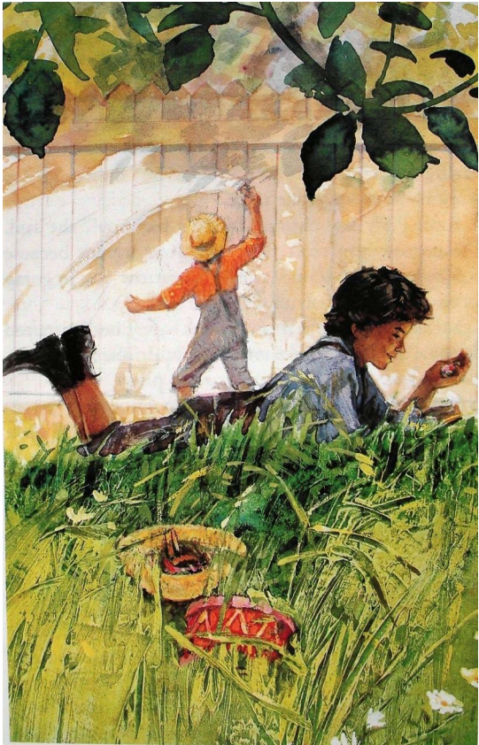
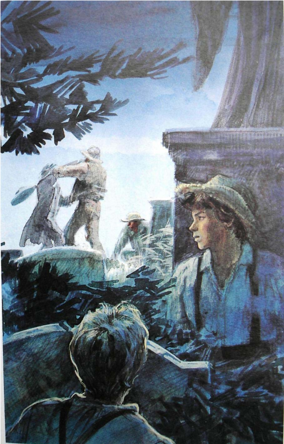
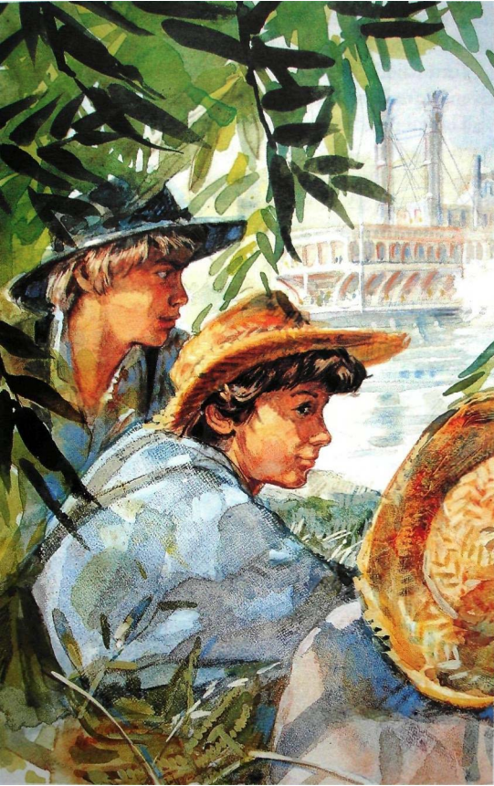
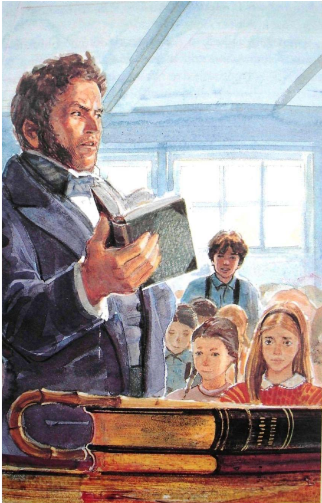

Chapter 1 - The Fence
Tom Sawyer lived with his aunt because his mother and father were dead. Tom didn’t like going to school, and he didn’t like working. He liked playing and having adventures. One Friday, he didn’t go to school—he went to the river.
Aunt Polly was angry. “You’re a bad boy!” she said. “Tomorrow you can’t play with your friends because you didn’t go to school today. Tomorrow you’re going to work for me. You can paint the fence.”
Saturday morning, Tom was not happy, but he started to paint the fence. His friend Jim was in the street.
Tom asked him, “Do you want to paint?”
Jim said, “No, I can’t. I’m going to get water.”
Then Ben came to Tom’s house. He watched Tom and said, “I’m going to swim today. You can’t swim because you’re working.”
Tom said, “This isn’t work. I like painting.”
“Can I paint, too?” Ben asked.
“No, you can’t,” Tom answered. “Aunt Polly asked me because I’m a very good painter.”
Ben said, “I’m a good painter, too. Please, can I paint? I have some fruit. Do you want it?”
OK,” Tom said. “Give me the fruit. Then you can paint.”
Ben started to paint the fence. Later, many boys came to Tom’s house. They watched Ben, and they wanted to paint, too.
Tom said, “Give me some food and you can paint.”
Tom stayed in the yard, and the boys painted. They painted the fence three times. It was beautiful and white.
Tom went into the house. “Aunt Polly, can I play now?” he asked.
Aunt Polly was surprised. “Did you paint the fence?” she asked.
“Yes, I did,” Tom answered. Aunt Polly went to the yard and looked at the fence. She was very surprised and very happy. “It’s beautiful!” she said. “Yes, you can play now.”
Tom walked to his friend Joe Harper’s house and played with his friends there. Then he walked home again. There was a new girl in one yard. She had yellow hair and blue eyes. She was beautiful. Tom wanted to talk to her, but she didn’t see him. She went into her house. Tom waited, but she didn’t come out again.
Chapter 2 - In the Graveyard
One morning before school, Tom’s friend Huck Finn waited for him in the street. Huck didn’t have a home, and he never went to school. People in the town didn’t like him. But Tom liked Huck.
Huck said, “Let’s have an adventure.”
“What can we do on our adventure?” Tom asked.
“Let’s go to the graveyard at night—at twelve o’clock!” Huck answered.
‘That’s a good adventure,” Tom said. “Let’s meet at eleven o’clock.”
Then Tom went to school, but he was late. The teacher was angry. He asked, “Why are you late again?”
“I’m late because I talked to Huck Finn,” Tom said. Then the teacher was very angry. “Sit with the girls,” he said to Tom.
Tom sat near the beautiful new girl. He was happy. He looked at her.
“What’s your name?” he asked.
“Becky,” she answered.
Tom smiled and said, “My name’s Tom.”
The teacher was angry again. “Tom Sawyer, stop talking! Go to your place now,” he said. Tom went to his place.
At twelve o’clock Tom and Becky didn’t go home. They stayed in the school yard and talked. Tom said, “I love you. Do you love me?”
“Yes,” Becky answered.
“Good,” Tom said. “Then you’re going to walk to school with me every day. Amy always walked with me.”
“Amy!” Becky said angrily. “Do you love her?”
“No,” Tom answered. “I love you now. Do you want to walk with me?”
But Becky was angry with Tom. She walked away and didn’t answer. Tom was unhappy. He didn’t go to school in the afternoon.
That night Tom went to bed at nine o’clock, but he didn’t sleep. At eleven o’clock he went out his bedroom window to the yard. Huck was there. They walked to the graveyard. They stopped behind some big trees and talked quietly.
Suddenly, there was a noise. Three men came into the graveyard—the doctor, Muff Potter, and Injun Joe. Injun Joe and the doctor talked angrily.
Then Injun Joe killed the doctor with a knife. Tom and Huck watched. Then they went away quickly because they were afraid.
They went to Tom’s yard. Huck said, “We can’t talk about this. Injun Joe can find us and kill us, too.”
“That’s right,” Tom said. “We can’t talk about it.”
Tom went in his bedroom window. He went to bed, but he didn’t sleep well. Tom and Huck didn’t talk to their friends or Aunt Polly about that night because they were afraid of Injun Joe.
Later, some men went to Muff Potter and said, “You’re a bad man. You killed the doctor.”
Chapter 3 - A Bad Day
Becky was sick and didn’t go to school for many days. Tom was very sad. One morning, he said to Aunt Polly, “I’m very sick, and I want to stay home from school.”
Aunt Polly said, “Here’s some medicine. Take this and you can get well quickly.”
But Tom didn’t like the medicine. Peter, the cat, came into the room and looked at Tom.
“Peter!” Tom said. ”Have some medicine!”
Peter had some medicine. He didn’t like it! He went quickly out the open window and into the yard.
Aunt Polly watched Peter. “Why did you do that, Tom?” she asked angrily. “You’re a very bad boy! Go to school now.”
Tom arrived at school early and he waited for Becky at the school fence. She arrived early, too, but she didn’t look at Tom. She went into school. Tom walked away. He didn’t want to go to school now. He was very sad.

Joe Harper was near the school. He was sad, too, because his mother was angry with him. The two boys walked and talked.
Tom said, “Let’s run away.” “Yes, let’s!” Joe said.
The two boys went to the river. Huck Finn was there. Tom and Joe said, “We’re going to run away. Do you want to come with us?”
“Yes,” Huck answered. “Let’s go across the river. We can have a good adventure there.”
The boys went home because they wanted to get food for their adventure.
Chapter 4 - Across the River
Tom, Joe, and Huck went to the river. There was a small boat there. The boys went across the river in the small boat. They said, “This is a good place because we can play all day. There’s no school here.”
They played and then went to sleep.
In the morning, the boys were happy again. They said, “Let’s stay here for a long time.”
In the afternoon, they played near the river again. Suddenly, there was a noise from a big boat on the river. The boys stopped playing and watched the boat.
“Listen,” Tom said. “The men on the boat are talking about us.”
The boys listened quietly. A man said, “The boys are in the river. They’re dead.”
Tom said, “Those men are looking for us in the river. We’re here, but they don’t know that.”
That night, the boys were sad. Huck and Joe went to sleep, but Tom didn’t sleep. He went home in the small boat. He quietly went in his bedroom window. Then he went under his bed and stayed there.
Aunt Polly and her friends came into his room. Aunt Polly said to her friends, “Tom was a good boy, and I loved him. Now he’s dead, and I’m very sad.”
Tom wanted to say, “I’m not dead.” But he stayed quiet. Aunt Polly went to sleep. Tom went out the window very quietly and went back across the river.
In the morning, Joe and Huck said, “We’re not happy
here now. We want to go home.”
Tom said, “Let’s go home on Sunday. We can go to
church. People are going to be very surprised!”
Sunday morning, many children were at church. They talked about the three boys. They were sad because their friends were dead. Becky was sad, too.
Suddenly, the three boys walked into the church. People were very surprised, but they were very happy, too.
Chapter 5 - At School
Monday morning, Tom went to school. The children wanted to hear about his adventure, and Tom liked talking about it. Becky wanted to talk to Tom, but he didn’t look at her.
Then Tom talked to Amy. Becky watched him and she
was angry. She said to her friends, “I’m going to have an
adventure day. You can come on my adventure.” But she
didn’t ask Tom.
Later in the morning, Tom talked to Amy again. Becky
talked to her friend Alfred and looked at a picture-book
with him. Tom watched them and he was angry with
Becky.
In the afternoon, Tom waited for Becky at the school
fence. He said, “I’m sorry.”
But Becky didn’t listen to him. She walked into the
school room. The teacher’s new book was on his table.
This book wasn’t for children, but Becky wanted to look
at it. She opened the book quietly and looked at the
pictures.
Suddenly, Tom came into the room. Becky was
surprised. She closed the book quickly, and it tore. Becky
was angry with Tom and quickly went out of the room.
Then the children and the teacher came into the room
and went to their places. The teacher looked at his book.
“Who did this? Who tore my book?” he asked angrily.
The room was very quiet. The teacher started to ask
every child, “Did you do this?”
They answered, “No, I didn’t.”
Then he looked at Becky “Becky, did you do this?”
Tom wanted to help her. Suddenly he said, “I did it. I
tore your book.”
“Tom Sawyer, you’re a very bad boy. Stay here after
school!” the teacher said angrily.
At five o’clock Tom started to walk home. Becky waited
for him at the school fence. “You’re a very good friend,”
she said.
Tom smiled at her and they walked home.
Chapter 6 - The Trial
Summer vacation started, and Becky went away with her
family. Tom was unhappy.
Then Muff Potter’s trial started. Tom and Huck
remembered the night in the graveyard. They were afraid
of Injun Joe again.
“Did you talk about the night in the graveyard?”
Tom asked Huck.
“No, I didn’t,” Huck answered. “Did you?”
“No,” Tom answered. “But. I’m sorry about Muff Potter.
He’s always friendly to us. He didn’t kill the doctor. I
want to help him.”
“Let’s take some food to him,” Huck said.
The boys visited Muff Potter. “Here’s some food,” they
said.
Muff Potter said, “Thank you. You’re good boys.”
Tom and Huck went to the trial and listened for two
days. Tom didn’t sleep well at night because he wanted to
help Muff Potter.
On day three of the trial Tom talked.
A man asked him, “Where were you on the night of
June 17th?”
“I was in the graveyard,” Tom answered.
“Did you see any people there?” the man asked:
“Yes. Injun Joe, the doctor, and Muff Potter were there.
They didn’t see me because I was behind some big trees.”
“What did you see?” the man asked.
“Injun Joe and the doctor talked angrily,” Tom
answered. “Then Injun Joe killed the doctor with his knife.
Muff Potter didn’t do it.”
The people at the trial were surprised. Injun Joe quickly
went out of the building.
Tom and Huck were very afraid. Tom said, “Now Injun
Joe knows about us. He can kill us, too.”
Many people wanted to hear about the boys’ adventure
in the graveyard. Tom liked talking about it. He was
happy, too, because he helped Muff Potter. But he didn’t
sleep well because he was afraid of Injun Joe.
Chapter 7 - Injun Joe’s Treasure
One Saturday afternoon, Tom wanted to have an adventure because he didn’t want to think about Injun Joe. He went to Huck and said, “I’m going to look for treasure. Do you want to come with me?”
Huck always liked an adventure. “Oh, yes,” he said. “Where can we look?”
“Let’s start looking in the old house near Mrs. Douglas’s
house. Old houses are good places for treasure,” Tom
answered.
The boys went to the old house. They wanted to look at
every room. First they went into the kitchen, and then they
went into the bedroom.
Suddenly, two men came into the kitchen—Injun Joe
and his friend. The boys were afraid and stayed in the
bedroom very quietly.
Injun Joe walked across the kitchen. “We can put our
money here,” he said to his friend.
He started to dig under the floor with his knife.
“What’s this?” Injun Joe said. “I’m going to get it out.”
There was a big box under the floor. He opened it with
his knife. There was a lot of money in the box.
“Look at that money!” his friend said. “Let’s go now.
We can come back and get it tomorrow.”
“No,” Injun Joe said. “We’re going to take it with us
now. We can take it to that place. You know—the place
under the cross.”
Then the men went out of the house. Injun Joe talked
quietly to his friend. The boys listened and were afraid.
Tom said, “Did you hear that? He wants to kill us.”
They went out of the house quietly and went home.
The boys were afraid of Injun Joe, but they wanted to
find his treasure. They watched his house every night, but
they didn’t see Injun Joe or his treasure.
Chapter 8 - Becky’s Adventure Day
In August Becky’s family came back from their vacation.
Tom was very happy and he didn’t think about Injun Joe’s
treasure.
Becky’s adventure day was Saturday. Her mother said,
“You can sleep at Susy Harper’s house after your
adventure.’
“Good,” Becky said.
Becky and her friends went on the river on a big boat.
The boat went down the river and across it. Then it
stopped. The children went out of the boat and played
games near the river. In the afternoon one boy asked,
“Who wants to go to the big cave?”
The children went to the cave. It was dark and cold
there, but they played games. In the evening they went
back to the boat and went home.
Sunday morning, Becky’s mother and Aunt Polly talked
to Mrs. Harper at church. Becky’s mother asked, “Where’s
my Becky? Did she sleep at your house?”
“No, she didn’t,” Mrs. Harper answered. “I didn’t see
her.”
Aunt Polly said, “My Tom didn’t come home. Did he
stay at your house?”
“No, he didn’t,” Mrs. Harper answered.
Then Aunt Polly and Becky’s mother asked the children,
“Did Tom and Becky come home? Did you see them on
the boat?”
The children answered, “No, we didn’t see them, but it
was dark.”
Then a boy said, “Maybe they’re in the cave!”
Two hundred men looked for Tom and Becky in the cave. They looked for three days, but they didn’t find them. People in the town were very sad.
Chapter 9 - Huck’s Adventure
Huck didn’t go on Becky’s adventure. He stayed home
and watched Injun Joe’s house that night. At eleven
o’clock Injun Joe and his friend came out and walked
down the street. There was a box in his friend’s hands.
Huck said quietly, “Maybe that’s the treasure box.” He
went after the two men.
They walked to Mrs. Douglas’s house and stopped in her
yard. Huck stayed behind some small trees. The men
talked, and Huck listened to them.
Injun Joe was angry. “I want to kill her,” he said to his
friend. “Mr. Douglas was bad to me. He’s dead now, but I
remember.”
“’There are a lot of lights in the house. Maybe her
friends are visiting,” Injun Joe’s friend said. “We can
come back tomorrow.”
“No,” Injun Joe said. “Let’s wait now.”
Huck liked Mrs. Douglas because she was always good
to him. He wanted to help her. He quietly walked away
and then he started to run to Mr. Jones’s house.
Mr. Jones opened the door. “What do you want?” he
asked Huck.
“Injun Joe and his friend are in Mrs. Douglas’s yard,”
Huck said. “They want to kill her. Can you go there and
help Mrs. Douglas?”

“Yes. My sons and I can go there,” Mr. Jones
answered. “You can go home.”
In the morning, Huck went back to Mr. Jones’s house.
“How’s Mrs. Douglas?” he asked.
“She’s OK,” Mr. Jones answered. “The men went away
because we arrived.”
“Good,” Huck said. But he was afraid of Injun Joe.
“Please don’t say my name to Mrs. Douglas.”
Mr. Jones looked at him, and then he said, “You aren’t
well. Go and sleep in my bedroom.”
Later, Mrs. Douglas visited Mr. Jones.
“You helped me yesterday night. Thank you,” she said.
“You’re a good man.”
Mr. Jones said, “We didn’t know about the men in your
yard. A boy was there and he wanted to help you. He came
here, but I can’t say his name.”
Mr. Jones and Mrs. Douglas went to church. People
there talked about Tom and Becky. Mr. Jones and his sons
went to the cave with the men, but on Monday morning
they went home. Huck was in bed and was very sick. The
men went back to the cave, but Mrs. Douglas stayed with
Huck.
Chapter 10 - In the Cave
Saturday, Tom and Becky walked and played in the cave.
Then they stopped near some water.
“What time is it?” Becky asked.
“I don’t know,” Tom said. “Let’s go back now”
The two children walked and walked. But they didn’t
find the door to the cave. Becky was afraid. She wanted to
sit down and eat. “Maybe they’re looking for us now,” she
said.
“Here’s some food,” Tom said. “Eat this and wait here.
I’m going to look for the door.”
Tom walked and walked. But he didn’t find the cave
door. Suddenly, there was a man near him. Tom was
afraid, but he stayed quiet. He looked at the man. It was
Injun Joe!
Tom was very afraid and he made a noise. Injun Joe
went away quickly. Tom went back to Becky, but he
didn’t talk to her about Injun Joe.
They were in the cave for three days. Tuesday, Becky
didn’t want to walk. Again Tom said, “Stay here. I’m
going to look for the door.”
This time he went to a new place. There was light there.
He went to the light. It came from a small door in the
cave.
Tom went out of the cave. Then he went back to Becky.
“Come with me,” he said. “We can go out of the cave
now.”
Tom and Becky went out of the cave. They were very
happy. They went to the river and waited there. Some men
in a small boat came to them.
Tom said, “We want to go home. Can you help us?”
The men answered, “Yes. We can take you home.”
Tom and Becky went in the boat with the men. They
arrived home very late Tuesday night, and people in the
town were very happy. Tom talked all night about their
adventure in the cave.
Chapter 11 - In the Cave Again
Tom and Becky stayed home for many days. Then, two
weeks after their adventure, Tom visited Becky and talked
to her father.
Mr. Thatcher said, “You’re a very good boy, Tom. You
helped Becky in the cave. Thank you. People can’t go into
it now because it has a new big door.”
“But Injun Joe’s living in the cave!” Tom said.
Some men went down the river to the cave. Tom went
with them. They opened the new door. Injun Joe was
there, but he was dead.
Tom wanted to talk to Huck. Later in the week he went
to Mr. Jones’s house. The two boys talked about their
adventures.
“The money isn’t in Injun Joe’s house,” Tom said. “It’s
in the cave! I know, because Injun Joe was there. Let’s get
it!”
Huck was afraid. “But maybe we can’t find it.”
“I can find it again,” Tom said. “I know about a small
door at the back of the cave. Becky and I came out there.
We can go in that door, and I can find Injun Joe’s treasure.”
“OK,” Huck said. “Let’s go today.”
That afternoon the boys went in a small boat to the back
of the cave. Tom walked first, and Huck went after him.
They walked and walked.
Then Tom said, “This is the right place! Injun Joe was
here.”
The boys looked for a good place for treasure.
Suddenly, Tom said, “Look! There’s a cross! Injun Joe
said, ’under the cross.’ Let’s look there!”
The boys went to the place with the cross. Tom said,
“I’m going to dig here with my knife ... Look! It’s the
treasure box! Let’s get it out now. The treasure’s ours!”
“This box is very heavy,” Huck said. “We can’t take it
with us.”
“I have some small bags,” Tom said. “We can put the
money in them and take it home.”
The boys went out of the cave with the money.
Chapter 12 - At Mrs. Douglas’s House
Tom said, “Let’s take the money to the old house near
Mrs. Douglas’s house. That’s a good place for it.”
They started to walk to the old house. Mr. Jones was in
Mrs. Douglas’s yard. He called to the boys.
“A lot of people are waiting for you. Come with me,” he
said. They went into Mrs. Douglas’s house.
“Hello, boys,” Mrs. Douglas said. “Come with me.”
Tom and Huck went with her to a bedroom. There were
new shirts and jeans on the bed.
“Wash your hands and faces and put on these shirts and
jeans,” Mrs. Douglas said. “Then come to the big room.”
The boys went to the room. A lot of people were there.
Mrs. Douglas said, “First I want to say ‘thank you’ to
Mr. Jones and his sons. They helped me. They’re very
good people.”
“Huck helped, too,” Mr. Jones said.
‘Thank you, too, Huck,” Mrs. Douglas said. “You’re a
good boy, and I like you. I want to give you a home and
some money.”
“But Huck has a lot of money!” Tom said.
He went to the bedroom and came back with the bags of
money. “We have this money from the cave There’s a lot
of money in them, and it’s ours now.”
There was $12,000 in the bags. The people were very
surprised. They asked about the boys’ adventure.
Chapter 13 - Huck’s New Home
Huck lived in the big house with Mrs. Douglas. He was a
new person. He washed every day, and he went to school
and church. But he wasn’t happy. He stayed there for three
weeks, and then he ran away.
Tom went to Huck. “Why did you run away?”
Huck answered, “Mrs. Douglas is a good woman. I like
her, but I can’t live with her. I don’t like washing every
day, and I don’t like going to school and church. I don’t
want to have a lot of money. But I want to be your friend.
OK?”
“No,” Tom said, “I can’t be your friend, because the
boys at school don’t want to play with you. We’re
thinking about a lot of new adventures. Please live with
Mrs. Douglas and come to school. Then the boys at school
can play with you.”
“I want to be your friend,” Huck said, “and I want to
have adventures with you and the boys at school. Maybe I
can live with Mrs. Douglas. I don’t know, but I’m going to
try it again for a month.”
“Good,” Tom said. “The boys are meeting later, at
twelve o’clock at night. You can come, too.”
“Good!” Huck said.
- THE END -
Thanks for watching!
If you liked the video, please give it a thumbs up and subscribe to our channel.
Check out our other videos for more content like this.